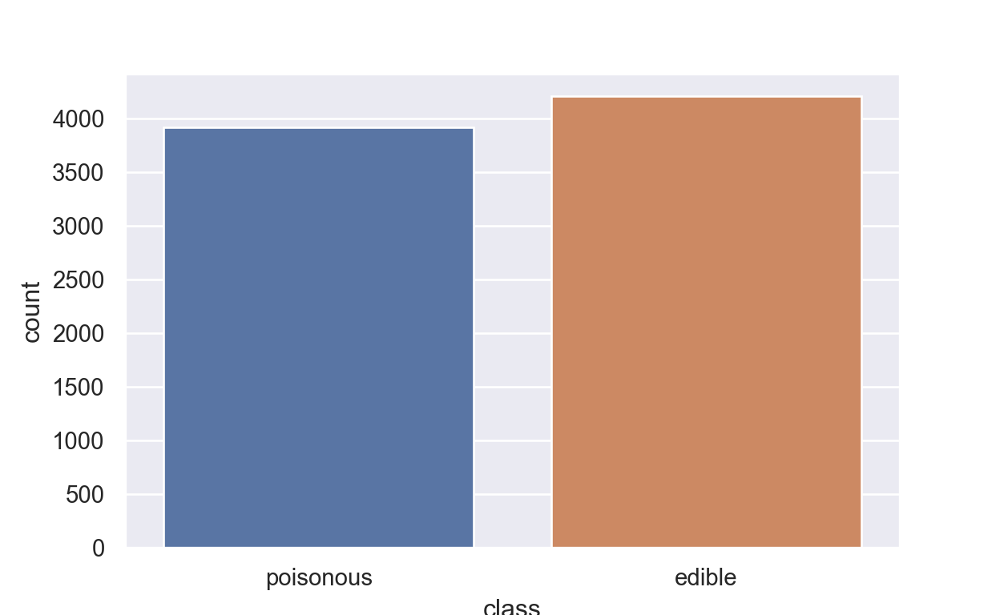
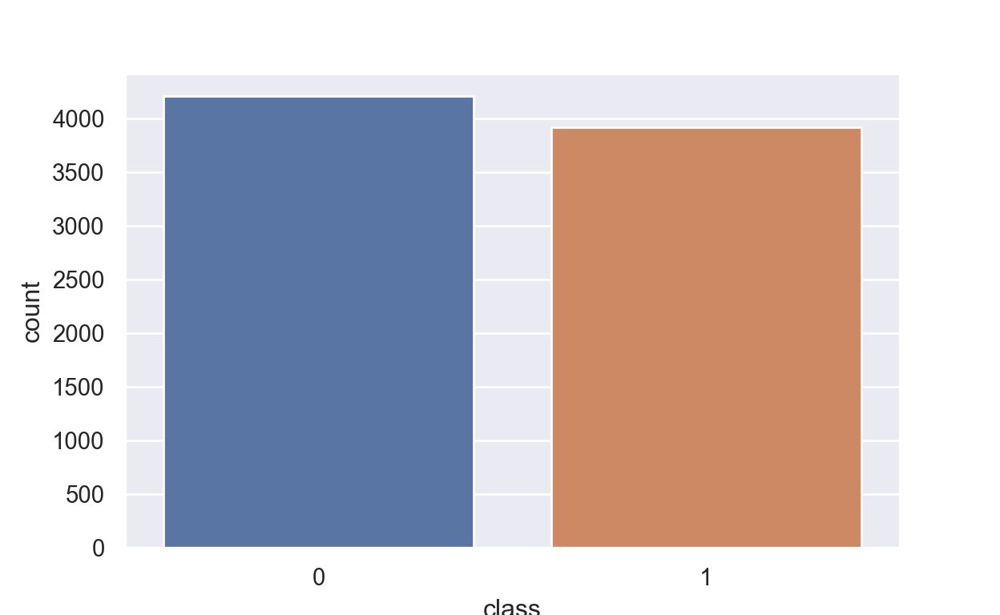
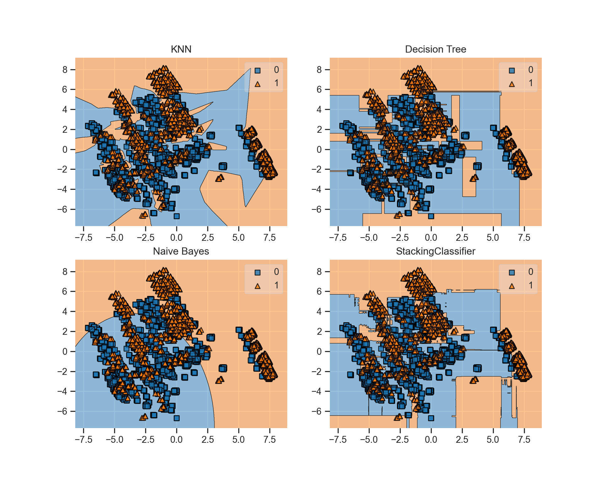

What is ensemble methods?
When you’re building a machine learning model, people generally choose the one that performs the best according to some evaluation metric such as accuracy score or F1 score. However, choosing one model over another, say decision tree over k-nearest Neighbor (Knn) or logistic Regression, may result in us discarding strengths of the remaining models which were able to learn different patterns that might have additional useful properties.
When you conduct a survey, you don’t accept only one “best” answer. You consider a combined response of all the participants, and use statistics like the mode or the mean to represent the responses. The combined responses will likely lead to a better decision than relying on a single response. The same principle applies to ensemble methods, where we could form a new model by combining the existing ones. The combined model will have better performance than any of the individual models, or at least, be as good as the best individual model. In other words, ensemble learning methods is the usage of multiple machine learning models to maximize their predictive capability.
In this post, I will be exploring the usage of ensemble machine learning models to predict which mushrooms are edible based on their properties (e.g., cap size, color, odor). The data set is from the UC-Irvine Machine Learning repository and is currently distributed for practice on Kaggle. I will explore the usage of one model, model voting, bootstrap aggregating (aka bagging), model boosting, and model stacking via Python.
Setting up the Environment and Data set
- Importing the necessary modules.
Show code
import pandas as pd
from sklearn.model_selection import train_test_split
from sklearn.model_selection import GridSearchCV
from sklearn.neighbors import KNeighborsClassifier
from sklearn.ensemble import RandomForestClassifier, GradientBoostingClassifier
from sklearn.linear_model import LogisticRegression
from sklearn.naive_bayes import GaussianNB
from sklearn.tree import DecisionTreeClassifier
from mlxtend.classifier import StackingClassifier
import xgboost as xgb
from sklearn.metrics import accuracy_score
from sklearn.metrics import f1_score
from sklearn.metrics import classification_report- Importing the data set and examine the distribution of our targeted variable - the mushroom class. E stands for edible and P stands for poisonous.
Show code
df = pd.read_csv("mushrooms.csv")
# data set shape
print("There are {} rows and {} columns in this dataset".format(df.shape[0], df.shape[1]))There are 8124 rows and 23 columns in this datasetShow code
df.info()<class 'pandas.core.frame.DataFrame'>
RangeIndex: 8124 entries, 0 to 8123
Data columns (total 23 columns):
# Column Non-Null Count Dtype
--- ------ -------------- -----
0 class 8124 non-null object
1 cap-shape 8124 non-null object
2 cap-surface 8124 non-null object
3 cap-color 8124 non-null object
4 bruises 8124 non-null object
5 odor 8124 non-null object
6 gill-attachment 8124 non-null object
7 gill-spacing 8124 non-null object
8 gill-size 8124 non-null object
9 gill-color 8124 non-null object
10 stalk-shape 8124 non-null object
11 stalk-root 8124 non-null object
12 stalk-surface-above-ring 8124 non-null object
13 stalk-surface-below-ring 8124 non-null object
14 stalk-color-above-ring 8124 non-null object
15 stalk-color-below-ring 8124 non-null object
16 veil-type 8124 non-null object
17 veil-color 8124 non-null object
18 ring-number 8124 non-null object
19 ring-type 8124 non-null object
20 spore-print-color 8124 non-null object
21 population 8124 non-null object
22 habitat 8124 non-null object
dtypes: object(23)
memory usage: 1.4+ MBShow code
class_dict= {'e': 'edible' , 'p':'poisonous'}
df['class'] = df['class'].map(class_dict)
import matplotlib.pyplot as plt
import seaborn as sns
sns.set_theme(style="darkgrid")
ax = sns.countplot(x="class", data = df)
plt.show()
Data Preprocessing
- The thing is, the data point is still coded in strings (i.e., alphabets, words or other characters). We need to re-code them into the numerical format for the machine to recognize patterns of the data.
Show code
from sklearn.preprocessing import LabelEncoder
labelencoder=LabelEncoder()
for col in df.columns:
df[col] = labelencoder.fit_transform(df[col])
#The machine does not know about mushrooms. It only knows pattern of the data as reflected by the type of occurrence.
#Checking the encoded values
df['stalk-color-above-ring'].unique()array([7, 3, 6, 4, 0, 2, 5, 1, 8])Show code
print(df.groupby('class').size())class
0 4208
1 3916
dtype: int64- I have re-coded labels of the data into numbers, with 0 means edible, 1 means poisonous.
Show code
sns.set_theme(style="darkgrid")
ax = sns.countplot(x="class", data = df)
plt.show()
- As always, I will create a training and a testing set for the models to learn from.
Show code
RANDOM_STATE = 123
X = df.drop('class', axis=1) #features
y = df['class'] #label
X_train, X_test, y_train, y_test = train_test_split(X, y, test_size = 0.30,
random_state = RANDOM_STATE)Performance of a Single Model
Naive Bayes
- First, I will test out the performance of Naive Bayes Classifier, which is one of the simplest machine learning algorithms in the field. The algorithm assumes that all predictor variables are independent to each other;this is not usually possible in the practical context; hence the name naive. However, Naive Bayes is fast, does not require much data, and can achieve great results if the assumption holds.
Show code
#Instantiate a Naive Bayes classifier
clf_nb = GaussianNB()
# Fit the model to the training set
clf_nb.fit(X_train,y_train)
# Calculate the predictions on the test setGaussianNB()Show code
pred_nb = clf_nb.predict(X_test)
# Evaluate the performance using the accuracy score
print("Accuracy: {:0.4f}".format(accuracy_score(y_test, pred_nb)))Accuracy: 0.9130Show code
print("F1: {:0.4f}".format(f1_score(y_test, pred_nb)))F1: 0.9091Logistic Regression
- Next, I will try performing Logistic Regression to with the same task to see if the result if going to be different. Logistic Regression is a regression model that predicts the probability of which category an input data point belongs to. The algorithm is one of the simplest and most commonly used models for for various classification problems such as spam detection or Diabetes prediction.
Show code
clf_lr = LogisticRegression(max_iter = 450, random_state = RANDOM_STATE)
clf_lr.fit(X_train,y_train)LogisticRegression(max_iter=450, random_state=123)Show code
pred_lr = clf_lr.predict(X_test)
print("Accuracy: {:0.4f}".format(accuracy_score(y_test, pred_lr)))Accuracy: 0.9471Show code
print("F1: {:0.4f}".format(f1_score(y_test, pred_lr)))F1: 0.9444- The results show that logistic regression performs better than Naive Bayes as seen from higher accuracy and F-1 score (94 vs 91). This is just the performance of a single model. We can actually improve the prediction result if we pool multiple models together to tackle the same task. Let us try diving into model voting and averaging.
Voting and Averaging
One type of ensemble methods is majority voting, which combines the output of many classifiers by using the mode of the individual predictions. It is recommended to use an odd number of classifiers. For example, if we use four classifiers, the predictions for positive and negative classes could be tied. Therefore, we need at least three classifiers, and when problem constraints allow it, use five or more.
There are some characteristics you need in your “crowd” for a voting ensemble to be effective. First, the ensemble needs to be diverse: you can do this by using different algorithms or different data sets. Second, each prediction needs to be independent and uncorrelated from the rest. Third, each model should be able to make its own prediction without relying on the other predictions. Finally, the ensemble model should aggregate individual predictions into a collective one. Keep in mind that Majority Voting is a technique which can only be applied to classification problems.
In addition to the Naive Bayes model we called for earlier, I will call for two additional models to participate in this majority voting method, namely k-Nearest Neighbors (Knn) and Decision Tree (DT). Knn is a classification algorithm in which a new data point is classified based on similarity in the specific group of neighboring data points. DR is another algorithm that uses a tree-like model of decisions and their possible consequences, including chance event outcomes, resource costs, and utility to predict outcomes of a data point.
Show code
clf_knn = KNeighborsClassifier(n_neighbors = 5)
clf_dt = DecisionTreeClassifier(min_samples_leaf = 3, min_samples_split = 9, random_state = RANDOM_STATE)
from mlxtend.classifier import EnsembleVoteClassifier
clf_vote = EnsembleVoteClassifier(clfs=[clf_nb, clf_knn, clf_dt], voting = "hard")
clf_vote.fit(X_train, y_train)EnsembleVoteClassifier(clfs=[GaussianNB(), KNeighborsClassifier(),
DecisionTreeClassifier(min_samples_leaf=3,
min_samples_split=9,
random_state=123)])Show code
pred_vote = clf_vote.predict(X_test)
score_vote = f1_score(pred_vote, y_test)
print("Accuracy: {:0.4f}".format(accuracy_score(y_test, pred_vote)))Accuracy: 0.9996Show code
print('F1-Score: {:.3f}'.format(score_vote))F1-Score: 1.000- The accuracy and F1 scores increase to almost 1.00, which means that the combination of the three models works well in improving their performance. The voting we did above is called “hard voting”, where every individual classifier votes for a class, and the majority wins. In statistical terms, the predicted target label of the ensemble is the mode of the distribution of individually predicted labels. There is also “soft voting”, where every individual classifier provides a probability value that a specific data point belongs to a particular target class.
- In this technique, the combined prediction is the mean of the individual predictions. For Regression, we use the predicted values. And for Classification, we use the predicted probabilities. As the mean doesn’t have ambiguous cases like the mode, we can use any number of estimators, as long as we have at least two of them.
Show code
clf_ave = EnsembleVoteClassifier(clfs=[clf_nb, clf_lr, clf_knn, clf_dt], voting = "soft")
clf_ave.fit(X_train, y_train)EnsembleVoteClassifier(clfs=[GaussianNB(),
LogisticRegression(max_iter=450, random_state=123),
KNeighborsClassifier(),
DecisionTreeClassifier(min_samples_leaf=3,
min_samples_split=9,
random_state=123)],
voting='soft')Show code
pred_ave = clf_ave.predict(X_test)
score_ave = f1_score(pred_ave, y_test)
print("Accuracy: {:0.4f}".format(accuracy_score(y_test, pred_ave)))Accuracy: 0.9979Show code
print('F1-Score: {:.3f}'.format(score_ave))F1-Score: 0.998Bagging
Model Voting and averaging work by combining the predictions of already trained models. These estimators that we included in the voting process are so well trained that, in some cases, they produce decent results on their own. Voting is appropriate when you already have optimized models and want to improve performance further by combining them. But what happens when you don’t have these estimators trained beforehand? Well, that’s when “weak” estimators come into play.
The idea of “weak” doesn’t mean that it is a bad model, just that it is not as strong as a highly optimized, fine-tuned model. Bootstrap Aggregating (aka Bagging) is the ensemble method behind powerful machine learning algorithms such as random forests that works by combining several weak models together to work on the same task. To clarify, a weak model (e.g., a single DT) is the model which works just slightly better than random guessing (approximately 50%). Therefore, the error rate is less than 50% but close to it. However, they are light in terms of space and computational requirements, and fast during training and evaluation.
You might be wondering how it is possible for a large group of “weak” models to be able to achieve good performance? This is the work of the “wisdom of the crowd”. Do ensemble methods with the same model have that potential? We have to refer to “Condorcet’s Jury Theorem”. If a jury (or a model, in our case) has more than 50% probability of getting the right answer, adding more voters increases the probability that the majority decision is correct up to 100% (not exactly 100%, but close enough).
The requirements for this theorem are the following: First, all the models must be independent. Secondly, each model performs better than random guessing. And finally, all individual models have similar performance. If these three conditions are met, then adding more models increases the probability of the ensemble to be correct, and makes this probability tend to 1, equivalent to 100%! The second and third requirements can be fulfilled by using the same “weak” model for all the estimators, as then all will have a similar performance and be better than random guessing. Several jury theorems carry the optimistic message that, in suitable circumstances, “crowds are wise”: many individuals together (using, for instance, majority voting) tend to make good decisions, outperforming fewer or just one individual.
Let’s try using the Random Forest classifier, which is an ensemble of a large number of individual decision trees that are designed to be uncorrelated through randomization. Each tree is unique and has its own errors. A group of unique trees are able to produce results that are moving toward the right direction should the requirements mentioned above are fulfilled.
Show code
# random forest model creation
clf_rf = RandomForestClassifier(random_state = RANDOM_STATE)
clf_rf.fit(X_train, y_train)
# predictionsRandomForestClassifier(random_state=123)Show code
pred_rfc = clf_rf.predict(X_test)
print("Accuracy: {:0.4f}".format(accuracy_score(y_test, pred_rfc)))Accuracy: 1.0000Show code
print("F1: {:0.4f}".format(f1_score(y_test, pred_rfc)))F1: 1.0000- The codes below visualize the first five trees from the forest and export it as a png file.
Show code
from sklearn import tree
fn = X.columns #for features
cn = df.columns[0] #for class
fig, axes = plt.subplots(nrows = 1,ncols = 5,figsize = (10,2), dpi=900)
for index in range(0, 5):
tree.plot_tree(clf_rf.estimators_[index],
feature_names = fn,
class_names = cn,
filled = True,
ax = axes[index]);
axes[index].set_title('Estimator: ' + str(index), fontsize = 11)
fig.savefig('rf_5trees.png')Boosting
The ensemble methods you’ve seen so far are based on an idea known as collective learning - that is, the wisdom of the crowd. For collective learning to be efficient, the estimators need to be independent and uncorrelated. In addition, all the estimators are learning the same task, for the same goal: to predict the target variable given the features. Gradual learning methods, on the other hand, are based on the principle of iterative learning. In this approach, each subsequent model tries to fix the errors of the previous model. Gradual learning creates dependent estimators, as each model takes advantage of the knowledge from the previous estimator.
In gradual learning, instead of the same model being corrected in every iteration, a new model is built that tries to fix the errors of the previous model. While this learning approach sounds promising, you should remain vigilant. It’s possible that some incorrect predictions may be made due to noise in the data, not because those data points are hard to predict. Gradient Boosting is another popular and powerful gradual learning ensemble model.
To explain how it works, let’s say that you want to predict values of a variable (e.g., whether a mushroom is edible, in our case). On the first iteration, our initial model is a weak estimator that is fit to the dataset. Then, on each subsequent iteration, a new model is built based pn error from the previous iteration. We repeat this process until the error is small enough such that the difference in performance is negligible. This is a peculiarity of Gradient Boosting, as the individual estimators are not combined through voting or averaging, but by addition. We had a model learn from its previous mistake.
Show code
#Call the model
clf_gbm = GradientBoostingClassifier(n_estimators = 100, learning_rate = 0.1, random_state=RANDOM_STATE)
#Fit the model
clf_gbm.fit(X_train, y_train)GradientBoostingClassifier(random_state=123)Show code
pred_gbm = clf_gbm.predict(X_test)
print("Accuracy: {:0.4f}".format(accuracy_score(y_test, pred_gbm)))Accuracy: 1.0000Show code
print("F1: {:0.4f}".format(f1_score(y_test, pred_gbm)))F1: 1.0000- Another example of boosting model is Extreme Gradient Boosting (aka XGBoost). XGBoost regularly wins online data science competitions and is widely used across different industries. The model is known in its speed and performance. Because the core XGBoost algorithm is parallelizable (as opposed to sequential ensemble of normal Gradient boosting), it can harness all of the processing power of modern multi-core computers. The model also consistently outperforms almost all other single-algorithm methods in machine learning competitions and has been shown to achieve state-of-the-art performance on a variety of benchmark machine learning data sets.
Show code
clf_xgb = xgb.XGBClassifier(objective='binary:logistic', n_estimators = 10, seed = RANDOM_STATE, use_label_encoder = False)
clf_xgb.fit(X_train, y_train)
#n_estimator is the number of boosting round
# predictions[23:57:05] WARNING: C:/Users/Administrator/workspace/xgboost-win64_release_1.5.1/src/learner.cc:1115: Starting in XGBoost 1.3.0, the default evaluation metric used with the objective 'binary:logistic' was changed from 'error' to 'logloss'. Explicitly set eval_metric if you'd like to restore the old behavior.
XGBClassifier(base_score=0.5, booster='gbtree', colsample_bylevel=1,
colsample_bynode=1, colsample_bytree=1, enable_categorical=False,
gamma=0, gpu_id=-1, importance_type=None,
interaction_constraints='', learning_rate=0.300000012,
max_delta_step=0, max_depth=6, min_child_weight=1, missing=nan,
monotone_constraints='()', n_estimators=10, n_jobs=8,
num_parallel_tree=1, predictor='auto', random_state=123,
reg_alpha=0, reg_lambda=1, scale_pos_weight=1, seed=123,
subsample=1, tree_method='exact', use_label_encoder=False,
validate_parameters=1, verbosity=None)Show code
pred_xgb = clf_xgb.predict(X_test)
print("Accuracy: {:0.4f}".format(accuracy_score(y_test, pred_xgb)))Accuracy: 1.0000Show code
print("F1: {:0.4f}".format(f1_score(y_test, pred_xgb)))F1: 1.0000- It is worth mentioning that you should consider using XGBoost for any supervised machine learning task that fits the following criteria: first, having at least 1000 examples; second, you have a mixture of categorical and numeric features, or when you have just numeric features. XGBoost is not ideally suited for image recognition, computer vision, or natural language processing as such problems can be much better tackled using deep learning approaches.XGBoost is also not suitable when you have very small training sets (less than 100 training examples) or when the number of training examples is significantly smaller than the number of features being used for training as it could lead to model overfitting.
Stacking
The final type of ensemble model we will be discussing here is model stacking. Consider a relay race, in which sprinters run until they pass the baton over to the next on track. This is a good example of teamwork. While all team members must be strong competitors, each individual has a special role to play based on their abilities. In this case, we will have the lead runner (aka anchor model) that knows individual strengths and weaknesses of each team member. Second, they should have clearly define tasks to do. Each team member must know their responsibilities and focus on them. Finally, the anchor must participate in the race to carry out the final run.
Here’s a diagram depicting the architecture of stacking ensembles. Each individual model uses the same data set and input features. These are the first-layer estimators. Then, estimators pass their predictions as additional input features to the second-layer estimator.

So far, we have seen ensemble methods that use simple arithmetic operations like the mean or the mode as combiners. However, in Stacking, the combiner is itself a trainable model. In addition, this combiner model has not only the predictions as input features, but also the original dataset. This allows it to determine which estimator is more accurate depending on the input features. In other words, it brings out the best ability in its team members to complete the task. The combiner model (aka meta learner) plays similar roles to the anchor in the relay race. It is also the last team member and the one which provides the final predictions.
In this post, I will stack Knn, DT, Naive Bayes, and Random Forest classifiers together with logistic regression as the meta model (team leader).
Show code
clf_stack = StackingClassifier(classifiers=[clf_knn, clf_dt, clf_nb, clf_rf], meta_classifier=clf_lr)
clf_stack.fit(X_train, y_train)StackingClassifier(classifiers=[KNeighborsClassifier(),
DecisionTreeClassifier(min_samples_leaf=3,
min_samples_split=9,
random_state=123),
GaussianNB(),
RandomForestClassifier(random_state=123)],
meta_classifier=LogisticRegression(max_iter=450,
random_state=123))Show code
pred_stack = clf_stack.predict(X_test)
print("Accuracy: {:0.4f}".format(accuracy_score(y_test, pred_stack)))Accuracy: 1.0000Show code
print("F1: {:0.4f}".format(f1_score(y_test, pred_stack)))F1: 1.0000Show code
report_stack = classification_report(y_test, pred_stack)
print(report_stack) precision recall f1-score support
0 1.00 1.00 1.00 1271
1 1.00 1.00 1.00 1167
accuracy 1.00 2438
macro avg 1.00 1.00 1.00 2438
weighted avg 1.00 1.00 1.00 2438Show code
from sklearn.metrics import confusion_matrix
confusion_matrix(y_test, pred_stack)array([[1271, 0],
[ 0, 1167]], dtype=int64)- To lessen our burden in model optimization, we can also tune hyperparameters of our models (both base model and meta model) all at the same time as well. This way, we will know which combination of hyperparameter values yield the best result. We can use it in our final model development.
Show code
params = {'kneighborsclassifier__n_neighbors': [1, 5],
'randomforestclassifier__n_estimators': [10, 50],
'meta_classifier__C': [0.1, 10.0]}
grid = GridSearchCV(estimator=clf_stack,
param_grid=params,
cv=5,
refit=True)
grid.fit(X_train, y_train)GridSearchCV(cv=5,
estimator=StackingClassifier(classifiers=[KNeighborsClassifier(),
DecisionTreeClassifier(min_samples_leaf=3,
min_samples_split=9,
random_state=123),
GaussianNB(),
RandomForestClassifier(random_state=123)],
meta_classifier=LogisticRegression(max_iter=450,
random_state=123)),
param_grid={'kneighborsclassifier__n_neighbors': [1, 5],
'meta_classifier__C': [0.1, 10.0],
'randomforestclassifier__n_estimators': [10, 50]})Show code
cv_keys = ('mean_test_score', 'std_test_score', 'params')
for r, _ in enumerate(grid.cv_results_['mean_test_score']):
print("%0.3f +/- %0.2f %r"
% (grid.cv_results_[cv_keys[0]][r],
grid.cv_results_[cv_keys[1]][r] / 2.0,
grid.cv_results_[cv_keys[2]][r]))1.000 +/- 0.00 {'kneighborsclassifier__n_neighbors': 1, 'meta_classifier__C': 0.1, 'randomforestclassifier__n_estimators': 10}
1.000 +/- 0.00 {'kneighborsclassifier__n_neighbors': 1, 'meta_classifier__C': 0.1, 'randomforestclassifier__n_estimators': 50}
1.000 +/- 0.00 {'kneighborsclassifier__n_neighbors': 1, 'meta_classifier__C': 10.0, 'randomforestclassifier__n_estimators': 10}
1.000 +/- 0.00 {'kneighborsclassifier__n_neighbors': 1, 'meta_classifier__C': 10.0, 'randomforestclassifier__n_estimators': 50}
1.000 +/- 0.00 {'kneighborsclassifier__n_neighbors': 5, 'meta_classifier__C': 0.1, 'randomforestclassifier__n_estimators': 10}
1.000 +/- 0.00 {'kneighborsclassifier__n_neighbors': 5, 'meta_classifier__C': 0.1, 'randomforestclassifier__n_estimators': 50}
1.000 +/- 0.00 {'kneighborsclassifier__n_neighbors': 5, 'meta_classifier__C': 10.0, 'randomforestclassifier__n_estimators': 10}
1.000 +/- 0.00 {'kneighborsclassifier__n_neighbors': 5, 'meta_classifier__C': 10.0, 'randomforestclassifier__n_estimators': 50}Show code
print('Best parameters: %s' % grid.best_params_)Best parameters: {'kneighborsclassifier__n_neighbors': 1, 'meta_classifier__C': 0.1, 'randomforestclassifier__n_estimators': 10}Show code
print('Accuracy: %.2f' % grid.best_score_)Accuracy: 1.00- I will be plotting the decision region below to visualize how each model perform compared to their collective performance from model stacking. The decision region of each model changes in accordance with its performance.
Show code
import matplotlib.pyplot as plt
from mlxtend.plotting import plot_decision_regions
import matplotlib.gridspec as gridspec
import itertools
from sklearn.decomposition import PCA
pca = PCA(n_components = 2)
X_np = X_train.to_numpy()
y_np = y_train.to_numpy()
X_np_reduced = pca.fit_transform(X_np)
gs = gridspec.GridSpec(2, 2)
fig = plt.figure(figsize=(10,8))
for clf, lab, grd in zip([clf_knn, clf_dt, clf_nb, clf_stack],
['KNN',
'Decision Tree',
'Naive Bayes',
'StackingClassifier'],
itertools.product([0, 1], repeat=2)):
clf.fit(X_np_reduced, y_np)
ax = plt.subplot(gs[grd[0], grd[1]])
fig = plot_decision_regions(X=X_np_reduced, y=y_np, clf=clf)
plt.title(lab)
KNeighborsClassifier()
Text(0.5, 1.0, 'KNN')
DecisionTreeClassifier(min_samples_leaf=3, min_samples_split=9,
random_state=123)
Text(0.5, 1.0, 'Decision Tree')
GaussianNB()
Text(0.5, 1.0, 'Naive Bayes')
StackingClassifier(classifiers=[KNeighborsClassifier(),
DecisionTreeClassifier(min_samples_leaf=3,
min_samples_split=9,
random_state=123),
GaussianNB(),
RandomForestClassifier(random_state=123)],
meta_classifier=LogisticRegression(max_iter=450,
random_state=123))
Text(0.5, 1.0, 'StackingClassifier')Show code
plt.show()
Conclusion
To summarize, Voting combines the predictions of individual models using the mode. As the mode is a categorical measure, Voting can only be applied to Classification. The Averaging method combines the individual predictions using the mean. In contrast to Voting, Averaging can be applied on both classification and regression. Bagging uses a large amount of “weak” estimators. Their predictions are then aggregated by Voting or Averaging. Boosting is based on the iterative learning principle, in which each model attempts to fix the errors from the previous one. Therefore, this approach uses a sequential model building. Finally, model stacking works by combining individual estimators, but the combiner is an estimator itself, instead of just an operation.
Using ensemble techniques is an effective way to maximize the performance of our predictive model. However, a major drawback of this approach is model interpretability. While its performance is good, explaining how features interact with each other to form the result could be challenging. This is the black box problem that happens when the model is too complex that we don’t know how it actually works. If a single model performs relatively well, going for it would be a good compromise. The simpler the model is, the easier for us to explain the result to our audience. Rather than going full technical, we should consider perspectives of the audience as well to make our work accessible. As always, thank you very much for reading! Have a good one!